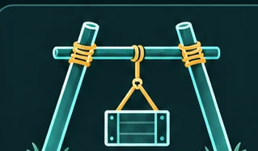

Kennwort
Im 2-m-Band/BOS lautet das Kennwort im Funkrufnamen der Organisation „Heros“. Der Rufname ist: Heros, Ortsverband, Nummer der Einheit. Welche Nummer deine Einheit hat, gibt dein Ortsverband vor.
Dein Wissen. Dein Weg.
↻ Jederzeit änderbar
Unabhängige, inoffizielle App. Sie ersetzt weder die Ausbildung noch offizielle Vorschriften. Die Inhalte des Prototyps sind Beispiele und nicht geprüft.
Deine Auswahl wird nur auf diesem Gerät gespeichert. Kein Konto, keine Internetverbindung nötig.
Schau genau hin, probier es mit deinem eigenen Seil und übe in deinem Tempo.
Greife das orange Seilende und führe es um das Holz.
Lernmodell, nicht am echten Seil geprüft. Übe danach am echten Seil und lass den Knoten prüfen.Ziehe den orangefarbenen Seilgriff zum grünen Punkt.
Halte den orangefarbenen Kreis gedrückt.
3D-Bewegung nachziehen · Keine Prüfung der tatsächlichen Seilführung.Ziehe den orangefarbenen Punkt in den grünen Kreis.
Geführte Fingerübung – noch keine geprüfte Knotensimulation. Beim Üben mit echtem Seil den Knoten kontrollieren lassen.
Heute starten
Was möchtest du heute machen?
Wähle ein Gerät.
Diese Inhalte folgen und werden fachlich geprüft, bevor sie erscheinen: Spanngurte, Drahtseile, Ketten, Rundschlingen, Bandschlingen, Schäkel. Die Auswahl des Anschlagmittels ist sicherheitsrelevant.
Persönliche Packliste. Die Anweisungen deines Ortsverbands gehen vor.
Tasche A immer griffbereit halten. Tasche B zu Hause an einem festen Platz, passend zur Jahreszeit. Einmal im Monat Haltbarkeit, Powerbank, Lampe und Kleidung prüfen. Nach jedem Einsatz Verbrauchtes ergänzen und Schmutziges reinigen.
Persönliche Vorbereitungsliste für erwachsene Helfer, kein offizielles Dokument. Die Taschengrößen sind Vorschläge; es gilt der Einsatzbefehl. Alles bleibt auf deinem Gerät.
Sprechfunk üben ohne Funkgerät. Die Formulierungen stammen aus den Praxisaufgaben 11.7.1 und 11.7.2 des Leistungsabzeichens. Die Antworten der Gegenstelle erscheinen nach dem Antippen.
Vorher nachfragen, welcher Betriebskanal gilt, und den Kanal richtig einstellen.
Gerät einschalten, Kanal prüfen, dann aufrufen.
Simulation: Es wird nichts gesendet, kein Funkgerät und kein Kanal angesteuert. Quelle der Aufgaben P 11.7.1 und P 11.7.2: Jugendgruppe, Leistungsabzeichen Anlage 8.5 (Stand 30.08.2015). Die falschen Antworten in den Übungen sind von uns als Übungsfallen formuliert. Das Ergebnis ist ein Übungsbericht, keine offizielle Bewertung. Nur Beispiele aus dem Leistungsabzeichen-Katalog. Das Ausbildungshandbuch „Sprechfunk im Einsatzdienst“ ist noch nicht eingearbeitet; Rufnummern und Abläufe im Einsatz gibt dein Ortsverband vor. Noch von einem Helfer prüfen lassen. Unabhängige, inoffizielle App.
BEREIT / LERNEN
Erkennen · Entscheiden · Lernen
Beispielinhalt, nicht geprüft. Die Entscheidungen sind Lernbeispiele und keine freigegebene Einsatzanweisung; im Einsatz gelten Ausbildung und offizielle Anweisungen. Das Szenario-Training ist unabhängig und inoffiziell.
Sucht in Geräten, Knoten, dem Wörterbuch, Leistungsabzeichen-Aufgaben und Prüfungsfragen. Alles bleibt auf deinem Gerät.
Deutsch, Englisch, Türkisch. Wähle die Sprachen aus und tippe auf den Lautsprecher zum Anhören.
Beispielbegriffe, noch nicht geprüft. Der Ton nutzt die Sprachausgabe deines Telefons; die Aussprache kann je nach Gerät abweichen.
Entdecken. Üben. Wiederholen.
Tippe ein Bild, um die passende Lektion zu öffnen.

ZweibockZweibockbundIn VorbereitungKonzeptgrafiken, nicht als Knotenanleitung fachlich geprüft. Maßgeblich sind Ausbildung und Anleitung der Ausbilder.
Zusätzliche Lerninhalte – einige Anleitungen sind noch in Vorbereitung.
Kein Knoten gefunden.
Lernzeichnung · Praktische Prüfung noch offen.
Dein Knoten. Dein Foto.
Eigene Fotos folgen in einer späteren Version.
So wird der Mastwurf am Rundholz gebunden. Tippe auf „Weiter“.
Vorderansicht: Durchgezogene Linien liegen vorn, gestrichelte Linien laufen hinter dem Holz. Wo sich Leinen kreuzen, liegt die Leine mit Lücke im Hintergrund unten.
Entwurf nach dem Lehrvideo der Jugendgruppe und dem Handbuch GA LA 3 (Abb. 22). Die Zeichnung des fertigen Knotens folgt, sobald sie am Video geprüft ist. Die Schritte 8 und 9 (Halbschlag) bitte von einem Helfer bestätigen lassen.
An Festpunkten mit großem Durchmesser löst sich der Mastwurf leicht. Deshalb mit einem Halbschlag sichern.
Nach dem Anschlagen muss das Seilende mindestens das Zehnfache des Seildurchmessers überstehen.
Zum Festlegen einer Leine an einem Pfahl, Pfosten oder Festpunkt. Er kann gebunden (direkt am Holz, wie in der Prüfung) oder gelegt (über das Ende geschoben) werden.
Unterschied zum Einfachen Ankerstich: Der Ankerstich zieht sich unter Last nicht um den Gegenstand fest, der Mastwurf schon.
Lernzeichnung: Bitte die Ausführung mit einer erfahrenen Ausbildungsperson prüfen.
Alle Knoten Schritt für Schritt auf einen Blick. Tippe auf ein Bild, um den Schritt groß zu sehen.
Schematische Eigenzeichnungen, nicht offiziell. Noch von einem Helfer prüfen lassen. Unabhängige, inoffizielle App.
BEREIT / LERNEN
Theorie-Fragen der Grundausbildung · Lernstand bleibt auf diesem Gerät.
Dein Lernstand, deine Packliste und deine Einstellungen liegen nur auf diesem Gerät. Wenn der Browser seine Daten löscht, sind sie weg. Mach deshalb ab und zu eine Sicherung.
Wähle die Sicherungsdatei oder füge den Text ein. Du siehst zuerst eine Vorschau. Es wird nichts geändert, bevor du bestätigst.
Vor jeder Wiederherstellung wird dein vorheriger Stand gesichert. Damit kannst du die letzte Änderung zurücknehmen.
Entwurf: Dieser Text wurde nicht rechtlich geprüft. Vor öffentlicher Nutzung muss die verantwortliche Person ihn prüfen und ergänzen.
[Noch nicht angegeben: Name und Kontakt der Betreiberin oder des Betreibers]
Lernstand, Fortschritt, Packliste, Einstellungen, eingegebene Namen (z. B. Ortsverband) und gespeicherte Video-Links liegen nur im Speicher deines Browsers auf diesem Gerät. Die App hat kein Konto und sendet diese Daten nicht an einen eigenen Server.
Wenn du eine Sicherung speicherst oder kopierst, entscheidest du, wohin sie geht. Sie enthält deinen Lernstand, aber nicht deine Zustimmung zu Sprachbefehlen.
Die App-Dateien werden über einen Webserver ausgeliefert (vorgesehen ist GitHub Pages). Beim Abruf verarbeitet der Anbieter technisch bedingt Verbindungsdaten wie die IP-Adresse. Einzelheiten stehen in dessen Datenschutzhinweisen; sie wurden hier nicht geprüft.
Beim Laden fordert die App derzeit eine Schriftart bei Google Fonts an. Dabei kann Google technische Verbindungsdaten wie die IP-Adresse erhalten. Das kann sich in einer späteren Version ändern.
Videos laden erst, wenn du sie antippst. Dann werden Daten an YouTube (Google) übertragen; die App nutzt dafür die Adresse youtube-nocookie.com. Ohne Internet sind Videos nicht verfügbar.
Sprachbefehle sind aus, bis du zustimmst, und starten nie von selbst. Mit Zustimmung nutzt die App die Spracherkennung deines Browsers. Dein Mikrofon-Ton kann vom Browser- oder Geräteanbieter verarbeitet werden und eine Internetverbindung brauchen. Wie das genau abläuft, hängt von Browser und Gerät ab und wurde nicht geprüft.
Die Mikrofon-Berechtigung des Browsers ist eine eigene Einstellung. Du kannst sie in den Browser-Einstellungen jederzeit ändern. Sie ersetzt die Zustimmung in der App nicht.
Das Vorlesen nutzt die Sprachausgabe deines Geräts. Ob die verwendete Stimme lokal oder über das Internet arbeitet, hängt vom Gerät und der Stimme ab und wurde nicht geprüft.
Sprachbefehle: keine Zustimmung (aus).
„Alle Daten auf diesem Gerät löschen“ entfernt auch deine Zustimmung.
Version: v123 · 39530605
Die Sicherung enthält nur deine eigenen Eingaben (Lernstand, Fortschritt, Packliste, Einstellungen, gespeicherte Video-Links). Es werden keine Daten hochgeladen. Unabhängige, inoffizielle App.
Praxis-Check (Leistungsabzeichen und Grundausbildung): Wähle eine Aufgabe und bewerte sie wie in der Prüfung.
Beispielaufgaben in eigenen Worten, an der Jugendgruppe-Anlage „Praktische Aufgaben“ (Stand 2015) und, für die Grundausbildung, an den GA-Praxisaufgaben (V3.3, März 2020) orientiert. Noch nicht von einem Betreuer geprüft. Unabhängige, inoffizielle App.
Beispielinhalt
0 / 5 erledigt
Beispielinhalt, nicht geprüft. Im echten Einsatz gelten Ausbildung und offizielle Anweisungen.
Mit Sprachbefehlen steuerst du den Freihändigen Modus per Stimme: „weiter“, „zurück“, „wiederholen“, „schließen“.
Dafür nutzt die App die Spracherkennung deines Browsers. Dein Mikrofon-Ton kann dabei vom Browser- oder Geräteanbieter verarbeitet werden und eine Internetverbindung brauchen.
Wie und wo der Ton genau verarbeitet wird, hängt von Browser und Gerät ab. Die App kann das nicht prüfen und sagt dazu nichts zu.
Die Spracherkennung bleibt aus, bis du hier zustimmst. Sie startet nie von selbst und läuft nur, solange der Freihändige Modus offen und das Mikrofon eingeschaltet ist.
Ausschalten: Tippe erneut auf „Sprachbefehl“ oder schließe den Freihändigen Modus. Zustimmung zurückziehen: Meine Daten, Abschnitt Datenschutz, „Zustimmung widerrufen“.
Zusätzlich fragt dein Browser getrennt nach der Mikrofon-Berechtigung. Das ist eine eigene Entscheidung und ersetzt diese Zustimmung nicht.